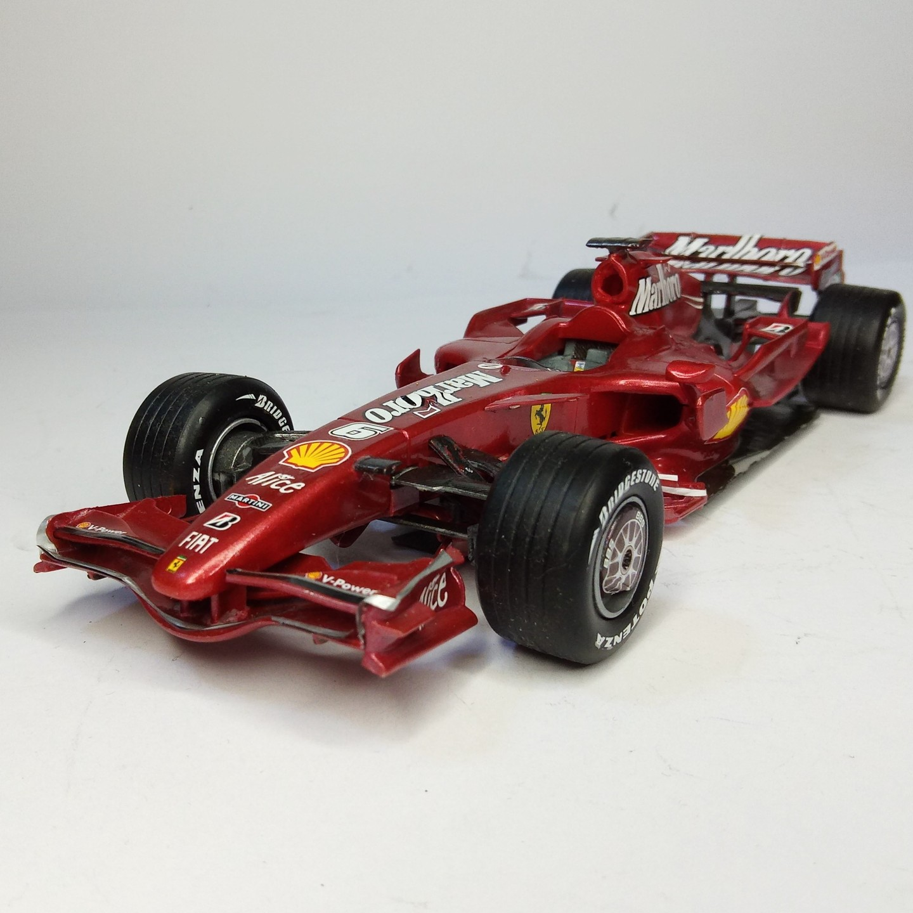
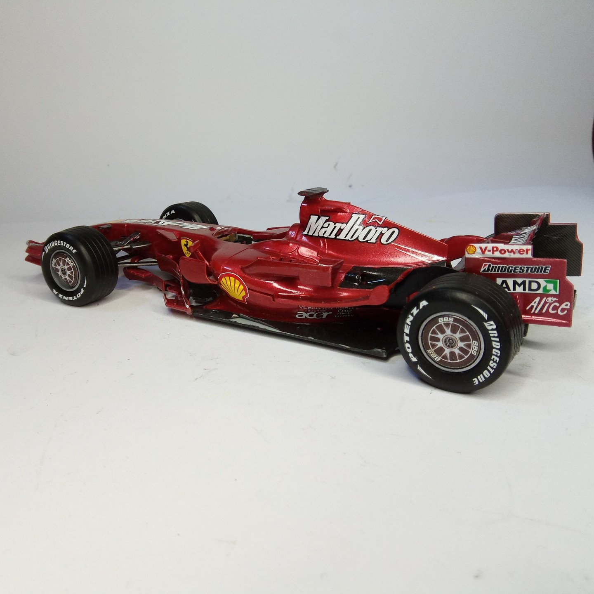

Auto e veicoli stradali · scale model archive
Ferrari F2007
Ferrari F2007 — Kit: Revell, Scale: 1/24. As raced in 2007 by Kimi Raikkonen, World Champion that year. Note the peculiar Ferrari red used in 2007 #1/24…

Photo gallery

English description
As raced in 2007 by Kimi Raikkonen, World Champion that year.
Note the peculiar Ferrari red used in 2007
#1/24 #Revell #FerrariF2007
Descrizione italiana
Come corse nel 2007 con Kimi Räikkönen, campione del mondo quell’anno. Da notare il particolare rosso Ferrari usato nel 2007.